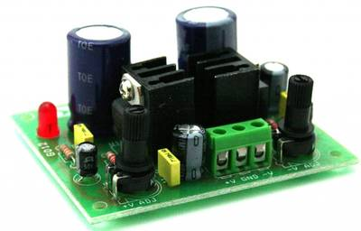
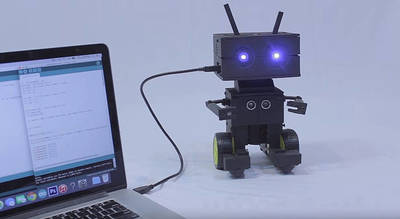
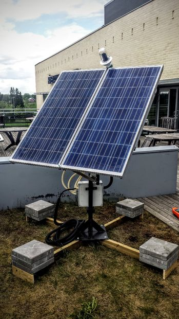

2016-07-28 - Nº 65

Editorial
Esta é a Newsletter Nº 65 que se apresenta com o mesmo formato que as anteriores. Se gostar da Newsletter partilhe-a!
Todas as Newsletters encontram-se indexadas no link.
Esta Newsletter tem os seguintes tópicos:
Esta semana o Facebook disponibilizou em formato open source os planos para a construção da sua câmara "Surround 360". Trata-se de uma câmara que captura video em 3D e a 360º. Ao fim de 40.000 KM percorridos o Solar Impulse 2 completou a sua viagem a volta do planeta apenas usando energia Solar. O MIT desenvolveu uma tecnologia capaz de apresentar imagens em 3D em salas de cinema sem o recurso a oculos. A Analog Devices vai adquirir a Linear Technologies por cerca de 30 mil milhões de dólares.
Na Newsletter desta semana apresentamos diversos projetos de maker. Na rubrica "Documentação" apresentamos três revistas que podem ser descarregadas livremente e que esta semana são a MagPI nº 48, a newelectronics de 26 de Julho 2016 e a HispaBrick issue 25.
 João Alves ([email protected])
João Alves ([email protected])
O conteúdo da Newsletter encontra-se sob a licença  Creative Commons Attribution-NonCommercial-ShareAlike 4.0 International License.
Creative Commons Attribution-NonCommercial-ShareAlike 4.0 International License.
Novidades da Semana ^
Surround 360 is now open source
"Today we officially open-sourced the specs for Surround 360, our high-quality 3D-360 hardware and software video capture system. The open source project includes the hardware camera design and software stitching code that makes end-to-end 3D-360 video capture possible in one system — from shooting to video processing. We believe making the camera design and stitching code freely available on GitHub will accelerate the growth of the 3D-360 ecosystem — developers will be able to leverage the code, and content creators can use the camera in their productions. Anyone will be able to contribute to, build on top of, improve, or distribute the camera based on these specs."
Completing a dream: the first Round-the-World solar flight in history
"We have now just watched our shared dream unveil, becoming a reality. It’s with great emotion that I write this last blog to report on the Round-the-World solar flights. Emotions, tears, relief, exhilaration is what we are all feeling right now after completing the first Round-the-World solar flight in history."
New movie screen allows for glasses-free 3-D at a larger scale
"3-D movies immerse us in new worlds and allow us to see places and things in ways that we otherwise couldn’t. But behind every 3-D experience is something that is uniformly despised: those goofy glasses. Fortunately, there may be hope. In a new paper, a team from MIT’s Computer Science and Artificial Intelligence Lab (CSAIL) and Israel’s Weizmann Institute of Science have demonstrated a display that lets audiences watch 3-D films in a movie theater without extra eyewear."
Analog Devices and Linear Technology to Combine Creating the Premier Analog Technology Company
"Analog Devices, Inc. and Linear Technology Corporation today announced that they have entered into a definitive agreement under which Analog Devices will acquire Linear Technology in a cash and stock transaction that values the combined enterprise at approximately $30 billion(1). Upon completion of the acquisition, Analog Devices will be the premier global analog technology company with approximately $5 billion in anticipated annual revenues."
Outras notícias
- World's first hyperloop factory is open for business
- Toshiba Starts World’s First Sample Shipment of 64-Layer 3D Flash Memory
- Mercedes-Benz is presenting the first fully electric truck for heavy distribution operations
- Microchip Releases Demonstration Platform Based on Industry’s Lowest Power BLE Sensor Node for IoT Applications
- 24M’s Batteries Could Better Harness Wind and Solar Power
- Download the new Arduino IDE 1.6.10!
Ciência e Tecnologia ^
-
"A pair of researchers at Cornell University has created an aluminum-based electrochemical cell that captures and sequesters carbon emissions while simultaneously generating a large amount of electricity. In their paper published in the journal Science Advances, Wajdi Al Sadat and Lynden Archer describe the cell, how it works and why they believe it is better than other carbon-capturing cells that have been developed to date."
Scientists program cells to remember and respond to series of stimuli

"Synthetic biology allows researchers to program cells to perform novel functions such as fluorescing in response to a particular chemical or producing drugs in response to disease markers. In a step toward devising much more complex cellular circuits, MIT engineers have now programmed cells to remember and respond to a series of events. These cells can remember, in the correct order, up to three different inputs, but this approach should be scalable to incorporate many more stimuli, the researchers say. Using this system, scientists can track cellular events that occur in a particular order, create environmental sensors that store complex histories, or program cellular trajectories."
Researching 3D Printing Technology on the Space Station
"Crew members on the International Space Station re-installed the first 3D printer in orbit, during the week of June 27, 2016, to continue research on the developing technology and how it can be used in space. NASA astronaut Jeff Williams installed the printer in the Microgravity Science Glovebox to begin another round of sample builds for NASA's 3D Printing in Zero-G Technology Demonstration. Williams took this photograph of the 3D printer on June 28, after installation. The 3D printer, originally delivered to the station and tested in 2014, heats a relatively low-temperature plastic filament to build parts layer by layer using designs supplied to the machine."
Documentação ^
A documentação é parte essencial do processo de aprendizagem e a Internet além de artigos interessantes de explorar também tem alguma documentação em formato PDF interessante de ler. Todos os links aqui apresentados são para conteúdo disponibilizado livremente pelo editor do livro.
Revistas
-
"Whenever a new piece of hardware comes out, there’s always people trying to port or emulate different operating systems onto them. The Raspberry Pi was no different, with several attempts at differing OSs when it was first launched. For over a year now though, Microsoft has officially supported Windows on the Raspberry Pi through Windows 10 IoT Core. In The MagPi 48 we cover the latest developments in Windows 10 IoT Core that have come about since the Raspberry Pi 3 was launched, and how to maker use of them in your own projects. We’ve also got exclusive news on an upcoming kit specifically for the Raspberry Pi 3 that lets you create amazing projects right out of the box. As well as all the Windows talk, we invite you to take part in the Scratch Olympics, continue building the arcade machine of your dreams, learn about Twitch-controlled robots, and read a review on the long-awaited NatureBytes wildlife camera. The MagPi 48 is out today in WH Smith, Tesco, Asda, and Sainsburys in the UK and will be in Microcenters and selected Barnes & Nobles when it comes to America. You can also buy a copy online from our store, or get it digitally on our app that’s available for iOS and Android."
-
"New Electronics is a fortnightly magazine focusing on technological innovation, news and the latest developments in the electronics sector. Downloadable as a digital page turner or pdf file, or offered as a hard copy, the New Electronics magazine is available in a format to suit you."
-
"This issue includes: An in-depth review and test drive of Set 42056 Porsche GT3 RS; The creator of series of Star Wars Maxifigs talks about his ‘larger than life’ creations; Reviews of 75098: Assault on Hoth; Minecraft 21128: The Village; 71012 – LEGO® Minifigures Disney™ Series 1; 71011 – Collectible Minifigures Series 15; 21305 – The Maze; 76052-1: Batman™ Classic TV Series – Batcave. Energy LEGO® Tablet 8”. Exhibition of LEGO® constructions at the XIV Collectors Fair in Mungia. A look at fan creations, this time the theme is sailboats. A review and photos of Nathan Sawaya’s touring exhibition “The Art of the Brick”. The team take a look at the updated WeDo 2.0 robotics set and compares the new educational robotics sets to their predecessors."
Modelos 3D ^
Com a disponibilidade de ferramentas que permitem dar azo a nossa imaginação na criação de peças 3D e espaços como o thingiverse para as publicar, esta rubrica apresenta alguns modelos selecionados que poderão ser úteis.
Parametric O-Ring
O-Rings are an easy way to create an airtight seal between two surfaces. This Customizer script allows you to easily make 3D printable molds for silicone O-Rings by adjusting two parameters.
Parameter "Inner Diameter" defines the inner diameter of the ring Parameter "Thickness" defines the diameter of the ring itself
Instructables Guide: http://www.instructables.com/id/Custom-O-Ring-Gaskets/ YouTube Video: https://youtu.be/NHhZk5iem8M
flange.stl can be printed to demonstrate an O-Ring with 10mm ID and 5mm thickness and is held together with M3 screws.
Subdivided Surfaces
Hi!
This is a generator for 2D subdivided surfaces
A old script made with Processing (http://www.processing.org) a few years ago adapted to Openscad.
This thing was the precursor of Futuristic Citybuider (http://www.thingiverse.com/thing:1680965) and follows a similar algorithm but now in 2D
You can generate rectangles, circles or polygons with different sizes and subdivision patterns in customizer.
I'm using in combination with Polygon bases and frames (http://www.thingiverse.com/thing:1693462) to make some boxes and pencil-cases.
Also you can use it for decoration, bracelets (blendig with warm water) or what you imagine.
Includes some STL files and some ZIPs with even more STLs
Hope you enjoy it Have fun!
Hex Shank Bit Holder - Parametric
This is a remix of the hex bit holder by TBRIshtar : http://www.thingiverse.com/thing:241501 - thanks TBRIshtar!
This remix mimics the original as close as possible but has the following features:
Almost fully parametric Any number of rows and columns, still keeping the edge rows open on the sides. This is nice if the hex shank has the bit size stamped on it. Footer height can be adjusted Wall height can be adjusted Allows easy scaling in the X and Y directions if your printer causes the hex holes to be too tight, like mine does. I use the OpenSCAD fillets lib https://github.com/jfhbrook/openscad-fillets by jhfbrook for filleting the edges - Thanks jhfbrook!
The Holder() module takes all dimensional parameters as arguments, so can easily be used from other SCAD files.
The original size of the holder by TBRIshtar are the defaults, but simply override any dimensions you want in subsequent variables of the same name, or change the originals.
Another quick way to generate STLs for any size is from the command line:
$ openscad -o output.stl -Dcolumns=7 -Dfoot=3 -D scl=1 bitHolder.scad Note when using the command line you must supply the scl variable if you do not want any scaling. This is because the file overrides the default scale from 1.0 to a scaling I use on my printer. The same goes for height and foot.
On Github: https://github.com/fitzterra/3DP/tree/master/Things/Tools/Hex_Shank_Drill_Bit_Holder
CipTool
Version 1.0 I must review some parts ...
Projetos Maker ^
Diversos Projetos interessantes.
-
"More and more, we're communicating with 3-letter abbreviations. BRB, LOL, WTF, etc. Smart phones, although convenient, are also adding to our disconnection from objects as things made by humans. This Split Flap Display brings text and animation back to its mechanical roots. By pushing the buttons, you cycle through all the letters of the alphabet to spell out your thoughts in acronym form, and the last frame is an animation of the very first cat video (by Eadweard Muybridge). Why use high-resolution, multi-functional devices when you can get back to your industrial revolution roots?"
RFID Based Home Security System Using 8051
"In these days we're here with our subsequent assignment that is RFID and keypad primarily based security machine. This assignment is implemented by means of the use of 8051. often we are able to see RFID tags or card in metro teach when we're going to someplace then we need to apply a RFID tag has some records and RFID readers, that may read and write statistics to RFID tags. RFID carries a RFID tag which has 12 digit serial wide variety that's read by using FRID Reader."
-
"Glad to say that's the 42nd structure by make it extreme! For this structure we were inspired from many videos uploaded on youtube where people use hover boards for entertainment. Our aim was to make a hoverboard using the parts of an old gym piece of equipment as well as other recycled and reused materials. We took a 300w motor and the electronic parts out of the gym piece of equipment so the motor would be able to perform correctly! The next stage was to make an axle, using the lathe, where we put two old tires from a crashed four wheeler. Then we placed the electronic parts the motor and the wheels on a metal frame and the hoverboard started getting shape. "
Dual Adjustable Regulated power supply 1.2V TO 37V DC

"This project is a solution to power up most of devices or projects requiring dual (+/-) adjustable power supply. The circuit is based on LM317 positive and LM337 negative voltage regulators. LM3X7 series of adjustable 3 terminal regulators is capable of supplying in excess of 1.5A over a 1.2V to 37V DC output range. On board TO220 Package with heat sink can handle maximum load current. Board provided with two on board preset to adjust the voltage."
Real time wind direction and speed
"I wanted a better wind vane, one that displays graphically on a compass rose and has a real time display, not the usual display delayed by 2 to 3 minutes like the WMR968. You can't really get an idea of wind conditions and gusts with a consumer weather station. The reason those displays are delayed is that they are trying to save battery power and the related solar panel cost by transmitting infrequently. This unit is powered by the display unit. The display unit's modified USB battery bank can be recharged via USB, or just left plugged in to a USB power adapter. I tried to keep costs lower than my previous wireless wind vane by using PVC sprinkler pipe rather than copper pipe. Also, by designing a wired system, that eliminates the wireless transmitter and receiver, instead using cheaper RS-485 transceivers. Wired systems can operate over greater distances and at greater speed without data dropouts that would be very annoying in the display unit."
Make your own development board with microcontroller
"Did you ever want to make your own development board with microcontroller and you didnt know how .In this instructable I will show you how to make it.All you need is knowledge in electronics, designing circuits and programming."
PowerBox: Recycled AC Power Distribution System From Old Computer AC Controller
"Most AC powerstrips do not have good filtering and do not have individually switched AC sockets. I had been on the lookout for a better solution and fortunately found a discarded computer AC controller that I converted to a well filtered and individually switched power controller. My repackaged version was built over two days, has a smaller footprint and is turning out to be heavily used. These old AC controllers were placed under a heavy CRT monitor and your desktop computer, monitor, rinter, etc were plugged into the controller and you would then be able to switch stuff on and off. Ah! the good old days."
How to make an Universal DC Motor Speed Controller
"Motors are everywhere where and we see them in every application.From Drills to Locomotives , from RC car to lathe machine everywhere there are uses of motors. But the most important characteristic of the motor is ,the need to be controlled for a specific work is the speed of the motor. Typically gears can be used to change speed , but sometimes it is not the solution . That time we need Electronic Control to control the speed of the motor."
MemType USB Stick With All Your Passwords
"Noela and Miguel from Area0x33 made a really helpful tool on hackaday.io. They designed a fully open source hardware USB stick to store your username/password pairs on. MemType uses Atmel ATtiny85 MCU and V-USB to do the communication over USB. V-USB is software-only implementation of a low-speed USB device for Atmels AVR microcontrollers."
Water Tank level display with Arduino
"We present the candidature of Mr. Danilo Abbasciano that is proposed for the realization of the firmware for the TiDiGino project and that presents us an application with Arduino: Display the level of a tank."
BCN3D MOVEO A fully Open Source 3D printed robot arm
"BCN3D Technologies keeps taking important steps in order to achieve his goal of bringing the digital manufacturing technology to everyone. In this occasion we are presenting the BCN3D Moveo, a robotic arm design from scratch and developed by our engineers in collaboration with the Departament dEnsenyament from the Generalitat de Catalunya. Its structure is fully printed using additive manufacturing technologies and its electronics are controlled by the software Arduino. Moveo, fully functional nowadays, has been born, as all the BCN3D Technologies products, with an open and educational wish."
-
"I'm giving some workshops in electronics in a few weeks, centered around an inexpensive, but useful real-world project. When trying to come up with a thing to make, I wanted it to involve a microcontroller, NeoPixel LEDs (because, they're awesome), be remotely controllable, and allow for different build options. It also had to be fully simulatable in Autodesk Circuits. This is the project that evolved. It packs some really cool features into a small device, is customizable, and is fairly simple to build."
-
"To day i would like to present How to make Weather Station Box. the weather station reading temperature and humidity form DHT22 sensor. when espresso lite read data form dht22 then sent data to Thingspeak and sleep 30 minute. I use dht22 because espresso lite built-in pin for DHT and OLED. it's very easy to make. let's start to join now Go Go Go..."
-
"Since my study was not always at the best temperature, I decided it would be useful to display the ambient temperature on my desk. The cost of a sensor that provided humidity, in addition to temperature, was not prohibitive; therefore a display of humidity as well as temperature was included in this project. Both the DHT11 and DHT22 sensors I considered provide temperature results in Centigrade. Fortunately it is an easy conversion to Fahrenheit (the format used in the USA, which is my location) . The sketch below displays temperature in both Fahrenheit and Centigrade, so it is applicable to whatever region of the world you are located in. My initial project only involved temperature measurement, but since adding humidity was not too costly, I decided to include it in this project."
Home made - one hand - Nitrox Analyser Arduino based
"In this instructable, I will show you how I built this Arduino based oxygen analyser."
-
"So, Pokmon Go is the latest craze, make sure you know how to hack the game! Use SAM, Lego, a pen and a rubber band to throw the ball without any shame."
Creating my own TV Tuner IR remote with a PIC16F684
"While I was home this winter, I saw that the remote for our TV tuner was damaged physically, causing the buttons to not function responsively. Some of them just didn't work. I saw this as an opportunity for a fun couple days' project to build a new remote controller for the tuner. The TV tuner was manufactured by a brand name RealView and, as expected, I couldn't find much detail about it. Thus, I had to reverse engineer the remote. From my previous experience in working with IR remotes, I had a hunch that the IR was most likely modulated at ~38kHz or ~56kHz."
-
"In this simple tutorial i'm gonna show you how to make your own led shoes!"
-
"This is a simple adjustable bench power supply I built to help me in my instructables. 8 ) Some time ago I build another using a computer (ATX) power supply, but this kind of solution provides fixed values: 3.3, 5 and 12 volts. This is the less expensive solution you will find (just if you have an ATX as spare), and is useful if you will work just with these values, but this is not my case. This project works with around 0.8V-29.4V ~ 5A."
-
"A FM radio with RDS info and digital volume can be made with RDA5807 module, who is similar as TEA5767 (pcb board & pins)."
Connect LCD to Raspberry Pi Without Breakout Board
"This instructables show how to connect LCD to Raspberry Pi (RPi) without breakout board."
-
"In this article we are going to show you how to build a Raspberry Pi Zero POV setup to display text from a file using an LED bar. The fun part is that the Pi and all the rest of the hardware are spinning glued onto a PC fan to deliver a fantastic POV effect whilst remaining wirelessly connected to your network!"
Simple and Fun Proximity Alarm
"Do you have a pesky sibling or pet that sneaks up on you? Are cars always in your blind spot? Create a proximity alarm that alerts you to approaching objects. This simple guide will teach you how to create a proximity alarm that will light up and make noise when something approaches. An ultrasonic rangefinder and Arduino microcontroller will check for nearby objects and if need be, alert you with a piezo-buzzer and RGB LED. Learn about these components using electronics lab simulations and eventually design, code, simulate, and build the proximity alarm itself! This is great if you are looking for a quick project to learn about digital electronics."
Automated Ultrasonic Misting 3D Print Polisher PRO
"It's been over a year since I published a popular Instructable about ultrasonic misting ABS 3D printed parts with acetone vapor. A couple months ago I was inspired to revisit this project by the professional 3D printing "Polysher" machine on Kickstarter. In this instructable I've redeveloped my original ultrasonic polisher proof of concept into a more polished and professional tool with key functional improvements. Additionally, after perfecting the machine I performed experiments involving mechanical testing of acetone polished ABS specimens in various orientations; and I observed some very interesting results! "
Quick, dirty and cheap laser engraver
"After playing a while with the "pocket laser engraver" I've fabricated folowing the instructable made by Groover, I want to make something bigger with things I already have in my possession. The only thing I've bought is a scanner (7 Euro's at the second hand stuff shop). All the other things I have already in the house. This instructable is'nt an 1,2,3 step build plan because of the differences of things one has on theire shelf. It's merely a guide on how you can do things."
-
"For a project at school, a friend and I decided to make a controllable car using an ardiuno as operating system. We also used a 3d printer to make one of the parts."
-
"Welcome to my led cube .it's easy, only thing to do is to learn code. Even I built my cube by referring to some of the instructables website."
-

"Meet The Wire Beings: a 3D printable robot platform designed for fun and education. The project only uses off the shelf electronic components to make the process of creation easy and cost effective for everyone. With all components of the design open source, changes can be made in accordance with the prospective goals. For example, a small change to the faceplate could accommodate front-facing cameras for visual information processing. Also, the robot is not limited to the onboard memory of the chosen development board. By using the "Johnny Five" javascript programming framework more complex programming can be achieved - with the computer serving as the brains of the operation sending commands to the robot via WIFI. "
-
"This is a robot that lip-synching to the music and the voice . It responds with sound hit the keyboard . Please put in the vicinity of the radio and speaker . Figure to be lip-synching to the music is very cute ."
Sunlight Detection Alarm with Arduino, How to Build a Fun to Use, Very Inexpensive, and Easy DIY
"Most technology Instructables are fun to construct, and often easy to build. This is one that shares those features, but also solves a practical problem we had. To prevent fading of furniture, carpet, and the wood flooring in our foyer, my spouse and I installed one-way blackout shades. However, after installation and use, a problem arose. The air in the foyer began to have a slightly musty odor as no sunlight was coming in. My solution was to build a direct sunlight detector, allowing us to close the shades only when the buzzer went off. On overcast days the shades would stay open, as the direct sunlight would not set the alarm off (we live in the Eastern US, so overcast days are not uncommon). It also meant that we could leave the shades open until we heard the alarm on clear days. The result all the mustiness is now gone and as a bonus the foyer is less gloomy. A quick, inexpensive and winning solution on all counts. The video shows the alarm "in action"."
Building an RC Robot Using a Wheelchair Base
"This two-part project will begin by showing you how to create a robot base from electric wheelchair parts. Part 1 will guide you through the creation of a simple robot platform for use with Radio Control. Part 2 will develop a different platform for use with Arduino."
Arduino Arpeggiated Bass Glitch Synth Electronic Instrument
"Every now and then, we find some cool stuff that we just absolutely have to try for ourselves. We found some work done by reddit user Nugetteero in this thread, which is comprised of some messy (but awesome and functional) code, and some components on a breadboard powered by an Arduino Nano. We love it, and we're surrounded by components that can be used to make it, so obviously we had to. WE HAD TO, IT'S SO COOL. So here's our version."
-
"Wouldnt it be nice to have an internet-connected alarm clock that automatically sets itself, based on your calendar? You would never miss an early appointment, never forget to set your alarm, and enjoy more restful sleep knowing youve solved the nightmare of regulating your alarms. An internet-savvy alarm clock could even watch your inbox and wake you up if friends or family send you an important email. This S.M.A.R.T. Alarm Clock (Setup for Meetings, Appointments, Reminders, and Tasks) uses the Arduino Yn, which is a special Arduino with two processors. One processor runs an embedded version of Linux and is connected to the internet over wi-fi or Ethernet. The other processor uses the same chip as the Arduino Leonardo microcontroller, allowing the Yn to work with most Arduino shields and accessories. By using the Arduino Yn, this project can talk to complex web services with the Linux processor, and interface with hardware an LCD touchscreen on the second processor."
Making microcontroller artificially intelligent - Neural Networks
"Artificial Intelligence, one of the most important research topics in computer science and robotics, and all implemented on a single chip that has memory of 8kbytes!? The main aim of this project is to describe possibility of implementing one of the leading algorithms in artificial intelligence that is Neural Networks on tiny microcontroller. Neural Networks (or Neural Nets for short) is a mathematical object that mimics the behavior of brain through connecting smallest computing units: Neurons. One of the main properties of (artificially) intelligent object is to be adaptive i.e. learn and analyse environmental conditions, and be able to respond to new, previously unseen condition."
-
"I created this robot to help with light painting techniques. If you don't know what light painting is, this link (http://www.diyphotography.net/painting_with_light/) gives a general description or you can simply google "light painting images." I wanted this robot to have preprogrammed functions to move in certain shapes. For example, if I wanted to create a circle, I would simply rotate the bot 360 degrees. I wanted to make this more complex, so I used a single led (for now) to create the light source. Based on the movement of the servos and motors, I can create any shape I want based on mathematical functions. Now, if I wanted to use the bot for anything else I can also manually control it."
Airplane Stabilization Project - Arduino
"Today I am going to build a model Airplane stabilizer. This platform can be used for on ground testing purposes. This project is made using Arduino Micro controller. I used MPU 6050 for measuring tilt in three axis. This is currently made out of corrugated cardboard, that makes the construction easy for this tutorial."
-
"This is meant to help current BB-8 builders to put their rolling droid's abilities to the next level. I am currently building a slightly modified model to accommodate for the ultrasonic sensor, but until that is finished, I am posting this because I believe it to be one of the next steps in the BB-8 building community. It uses an ultrasonic sensor to measure distance, this portion is in the dome. It then sends a signal if the BB-8 approaches an obstacle, and the drive-train reacts accordingly. In order to configure the bluetooth modules, I have made a separate instructable linked here, for there are many different versions, and they are hard to configure."
Dual axis solar tracker with online energy monitor

"The features of this solar tracker are: Solar tracking: making sure the solar panels are aligned to the sun as long as possible. Energy monitor: This measures the voltage and the current generated by the panels and calculates the generated Power and Energy. Data logging: this sends the data from the energy monitor into the cloud of ThingSpeak. Also there is an LCD to display the values of the energy monitor In this instructable are technical drawings of the project included. And at step 10 there is a link to the complete project report and presentation."
That's all Folks!